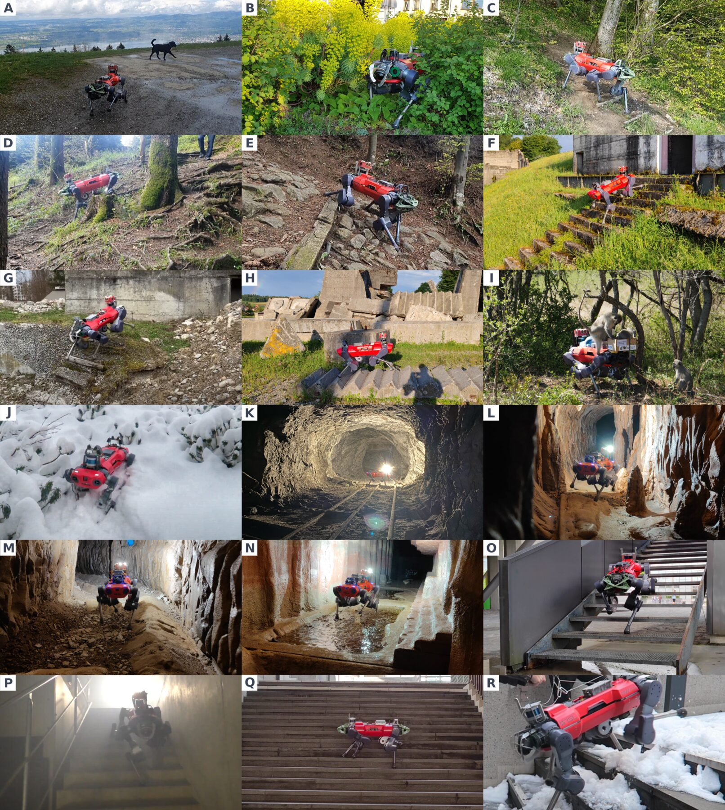
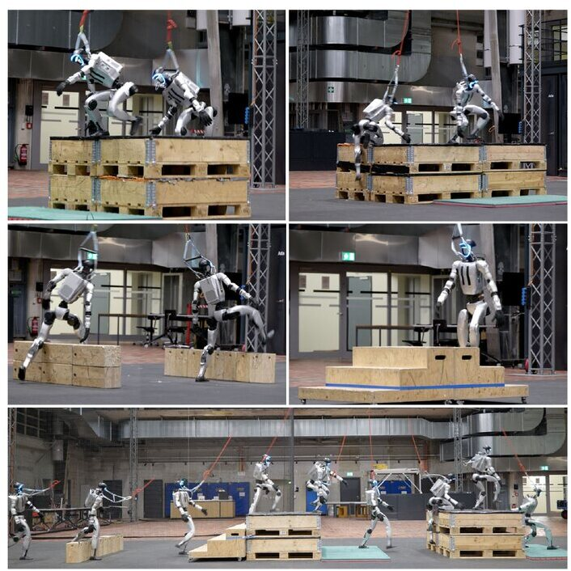
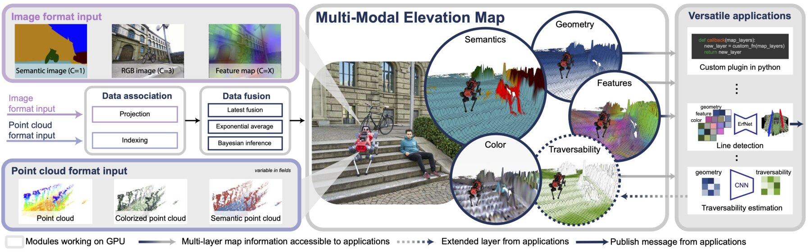
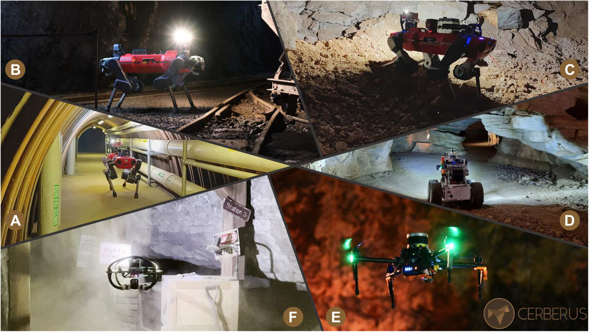

いま取り組んでいることと、これまでの 34 本の論文の背景にある研究テーマを、10 のプロジェクトに分けて紹介します。
卓上のロボットアームから全身ヒューマノイドまで、どんなロボットの体もひとつのモデルで。
Google DeepMind の Gemini Robotics チームで、ロボットがタスクを理解し、考え、行動できるようにする Vision-Language-Action モデルを開発しています。担当はモデルの知的な全身制御の能力です。
2026年7月に発表された Gemini Robotics 2 は、ヒューマノイドの全身を足先から指先まで制御します。重心のバランスを取りながら、決まった姿勢から手を伸ばすだけでなく、踏み出したり、しゃがんだり、かがんだりして散らかった場所でも動けます。同じモデルで双腕ロボットや器用なロボットハンドも動かせます。

脚ロボットが地面を見ながら、それでも自分の脚の感覚を信じて歩けるようにする強化学習。
強化学習で四脚ロボットを歩かせる研究です。手続き的に生成したさまざまな地形でシミュレーション学習した方策を、そのまま実機の ANYmal で動かします。
核となるアイデアは、ロボットが「見たもの」と「足で感じたもの」を組み合わせることです。雪、背の高い草、強い光、暗闇などで視覚が間違っていても、速く安定して歩き続けられます。この研究で ANYmal は山道を登り、崩れた狭い空間に入り、火星のような地形を歩きました。
学習した制御器がどこで失敗するかを見つけ、慎重に振る舞うことを教える。
強化学習で学んだ歩行方策は、デモではどれも頑丈に見えても、失敗するケースを隠していることがあります。この研究では、あえて方策を攻撃して弱点を見つけ、方策に自分の不確かさやリスクを意識させ、人の好みを使って振る舞いを形づくります。
家の中で暮らすロボットも対象です。たとえば、小型の家庭用四脚ロボットを一緒に暮らせるくらい静かに歩かせる研究もしました。

記録された動きから学んで自然に動き、さらに荒れた地形に合わせる。
歩き方をひとつひとつ報酬関数で作り込む代わりに、実際の動きのデータから始めます。四脚ロボットには動物の動き、ヒューマノイドには人の動きをロボットに合わせて変換したものを使います。
その上の層で、ロボットが見た周囲の状況に合わせて自然な動きを調整します。こうして、学んだ動きらしさを保ったまま、箱やハードル、階段を登れるようになります。

elevation_mapping_cupy: 脚ロボットのための、GPU で動く高速な地形マップと、その上での経路計画。
オープンソースの標高マッピングソフトウェア elevation_mapping_cupy を開発しました。深度カメラや LiDAR のデータを GPU 上でロボット中心の高さマップに変換し、走行可能性の評価、平滑化、欠けた部分の補完、平面分割を内蔵しています。のちに色や意味情報も統合できるよう拡張されました。
そのマップの上で、岩の陰に隠れて見えない部分を学習で補ったり、ロボットが実際にどう動くかから学んだコストを使って経路を計画したりしています。
物も扱える脚: ドアを開け、アームを支え、ボールを受け止める。
脚ロボットは、周りの世界に働きかけられるようになると格段に役に立ちます。これらの研究では、学習した歩行制御とアームを組み合わせたり、脚そのものを腕のように使ったりします。
ドアを開けて通り抜ける、アームが体を押してもバランスを保つ、脚で大きなボールを回す、イベントカメラを使って投げられたボールをネットで受け止める、といったことに取り組みました。

2021年の決勝で優勝し、賞金200万ドルを獲得。
Team CERBERUS の一員として DARPA Subterranean Challenge に参加し、決勝で優勝、賞金200万ドルを獲得しました。
脚ロボットと飛行ロボットが、トンネル、洞窟、地下鉄の駅からなる未知の地下コースを探索し、地図を作り、対象物を探します。GPS は使えず、オペレーターとの通信もほとんどできない環境です。
脚ロボットを火山、惑星アナログ地、そして街の中へ。
上手に歩けるロボットは出発点にすぎません。目標は、厳しい場所で役に立つ仕事をすることです。これらの運用では、脚ロボットを科学観測の道具として、また自律的な探査機として働かせました。
複数のロボットのチームで月や火星に似た地形を探査し、ANYmal がエトナ山で火山ガスを測定し、車輪付きの脚ロボットが街の中で長い自律ミッションをこなしました。
原点: 飛行ロボット、月面ローバー、複数ロボットの意思決定。
脚ロボットの前は、ドローンとローバーの研究をしていました。周囲に AR マーカーを貼り付けて自分の位置を推定するドローン、ローバーが崖を巻き上げて登れるようにテザーを固定するドローン、そして目標を探す複数ドローンのチームの意思決定です。
そのほか、ispace では超小型月面ローバーのための月面シミュレーターを、日立製作所では商品を陳列する双腕ロボットを手がけました。
言語モデルの中に秘密を隠し、ほかのチームの秘密を盗み出す。
IEEE SaTML 2024 の Capture-the-Flag コンペでは、各チームが LLM のシステムプロンプトに秘密を隠す防御を作り、互いの防御を攻撃し合いました。私たちのチーム RSLLM は2位を獲得し、コンペのデータセットと得られた知見は NeurIPS 2024 で発表されました。